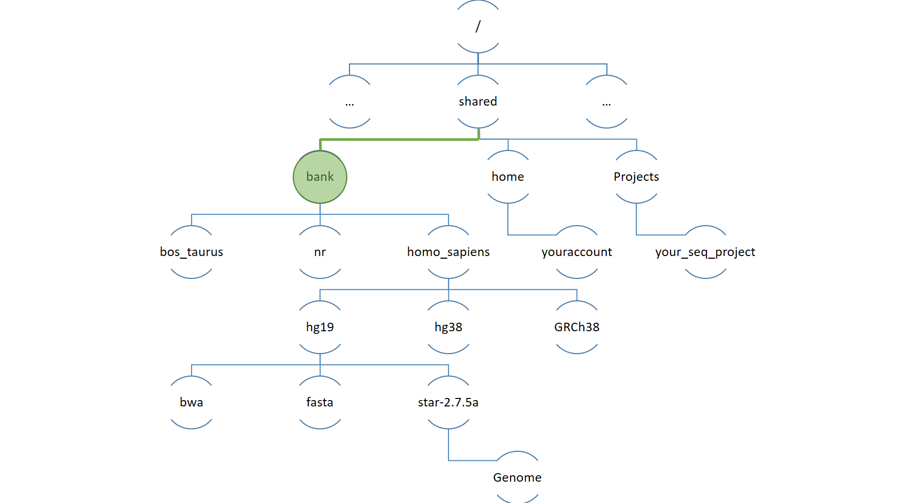

Arborescence de fichiers#
L’arborescence du système de fichier#
Le système de fichier peut être vu comme un arbre dont les feuilles sont des dossiers et fichiers. On peut se déplacer dans cet arbre en suivant les branches.
L’arbre ci-dessous est ancré par sa racine, le dossier
/

En suivant les branches, nous observons que le dossier
/contient notammentun dossier
shared
qui lui même contient un dossier
bankqui lui même contient un dossier
homo_sapiens
Chemin du dossier
homo_sapiens/shared/bank/homo_sapiens
Faire référence à un dossier ou fichier ?#
Notre objectif est de nous rendre dans le dossier homo_sapiens
Nous utiliserons les commandes pwd (print work directory) et cd (change directory) et nous aurons alors deux choix :
En spécifiant un chemin depuis la racine.
On parle de chemin absolu
cd /shared/bank/homo_sapiens
pwd
/shared/bank/homo_sapiens
?2004h
En spécifiant un chemin depuis le répertoire courant.
Le répertoire courant est celui dans lequel l’utilisateur se trouve à un instant t.
Le chemin sera relatif au répertoire courant.
# Depuis homo_sapiens on peut aller dans hg19 puis star
cd hg19/star-2.7.5a
pwd
# ou cd ./hg19/star-2.7.5a
# Avec “.” pour signifie “le répertoire
# courant”.
# le répertoire précédent
cd ..
pwd
cd ./star-2.7.5a
pwd
Il existe également une commande permettant de voir cette architecture de dossiers et fichiers. Plaçons nous dans le dossier homo_sapiens
cd /shared/bank/homo_sapiens
# -d : List directories only
tree -d
Dans ce cas, nous affichons l’ensemble des dossiers en vert ci-dessous ainsi que l’ensemble des sous-dossiers qu’ils contiennent
Autocompletion#
Si vous voulez briller en société ou en famille en donnant l’impression de taper vite, utilisez l’auto-complétion
De manière plus générale c’est essentiel pour taper un chemin sans se tromper.
E.g. Aller dans le répertoire
/usr/local/bin
Vous n’avez pas fini d’entendre <TAB><TAB>
L’arborescence: Demo#
On utilise ci-dessous la commande pwd (print working directory) et la commande cd (change directory). *
# On se déplace dans le dossier star
cd /shared/bank/homo_sapiens/hg38/star-2.7.5a/
# On imprime le chemin vers le répertoire courant
pwd
# On remonte d'un répertoire (hg38)
cd ..
pwd
# On se déplace dans le dossier bank
cd ../..
pwd
# On se retrouve 1 cran plus haut puis projects
cd ../projects
# Aller dans uniprot_swissprot
# cd ../b<TAB>/u<TAB><TAB><TAB>p<TAB><TAB>_<TAB>
cd ../bank/uniprot_swissprot
pwd
Utilisez la complétion pour les noms les noms de fichier (touche
L’arborescence quelques astuces#
Si vous êtes l’utilisateur cnorris. Le dossier qui stocke vos documents est par défaut /shared/home/cnorris *
ie. ‘dossier utilisateur’ ou dossier home.
Il est symbolisé par
~(tilde).AltGr + 2(PC) ouAlt + n + espace(OSX)
* Remplacez cnorris par votre login
# votre login
whoami
# On est à la racine
cd /
# /
pwd
# On retourne dans le home
cd ~
# Equivalent de cd ~
cd